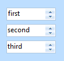
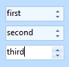
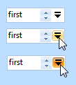

KryptonDomainUpDown
The KryptonDomainUpDown control allows you to display text values with the ability to use spin buttons to change the value up and down a predefined list. This control uses the Krypton palette to obtain values for the drawing of the control.
Implementation
It is important to note that the implementation of the Krypton control is achieved by embedding a standard windows forms DomainUpDown control inside a custom control. As such the functionality of the edit portion of the control is the same as that of the standard windows forms control. The Krypton implementation draws the border around the embedded control area and also allows for the display of ButtonSpec instances.
You can directly access the embedded control instance by using the KryptonDomainUpDown.DomainUpDown property. This property is not exposed at design time but can be accessed directly using code. In most scenarios you should not need to access the underlying control as the majority of methods and properties for the embedded domain control are exposed directly by the KryptonDomainUpDown. However if you need to implement drag and drop functionality you will need to hook directly into the events exposed by the embedded control and not the drag and drop events of the Krypton custom control.
Appearance
The InputControlStyle property has a default value of Standalone giving the same appearance as seen in figure 1. As the name suggests this is intended for use in a scenario where the control is used in a standalone fashion and used on something like a KryptonPanel or KryptonGroup. The InputControlStyle of Ribbon is intended for use when the control is present inside the KryptonRibbon and then needs a different appearance and operation.

Figure 1 – InputControlStyle = Standalone
Three States
Only three possible states of Disabled, Normal or Active are used by the domain control. In order to customize the appearance use the corresponding StateDisabled, StateNormal and StateActive properties. Each of these properties allows you to modify the background, border and content characteristics. Note that the control is restricted to the Disabled and Active states if the AlwaysActive property is defined as True.
To speed up the customization process an extra StateCommon property has been provided. The settings from this are used if no override has been defined for the state specific entry. Note that the specific state values always take precedence and so if you define the border color in StateNormal and StateCommon then the StateNormal value will be used whenever the control is in the Normal state. Only if the StateNormal value is not overridden will it look in StateCommon.
AlwaysActive
This property is used to indicate if the control should always be in the active state. For an InputControlStyle of Standalone the default value of True is appropriate. However, when you switch to using the InputControlStyle of Ribbon you should alter this to False. A value of False means that when the mouse is not over the control and it also does not have focus it will be considered inactive. This allows you to specify a different appearance for the active and inactive states. Figure 2 shows an example of the Ribbon style with the AlwaysActive property defined as False. The top instance does not have the mouse over it and the bottom instance does.

Figure 2 – InputControlStyle = Ribbon
ButtonSpecs
Use this collection property to define any number of extra buttons that you would like to appear at the near or far edges of the control. Figure 3 shows an example of a button specification that has been created to be positioned at the Far edge with a button style of ButtonSpec and a button type of Context. You could then use this button to show a context menu with additional options relevant to the entry field. Other possible uses of button specifications might be to indicate error conditions or to initiate the showing of help information.

Figure 3 – KryptonDomainUpDown with ButtonSpec definition
AllowButtonSpecTooltips
By default the control will not show any tool tips when you hover the mouse over the user defined button specifications. If you set this boolean property to True then it will turn on tool tips for those button specs. Use the ButtonSpec.TooltipText property in order to define the string you would like to appear inside the displayed tool tip.
AllowButtonSpecTooltipPriority
If the parent Item has tooltips, and the button spec has tooltips, then
the default is show both when hovering over the buttonspec. This can be disabled
by setting AllowButtonSpecTooltipPriority to true, so that only 1 tooltip is
displayed when hovering over any part of the control.